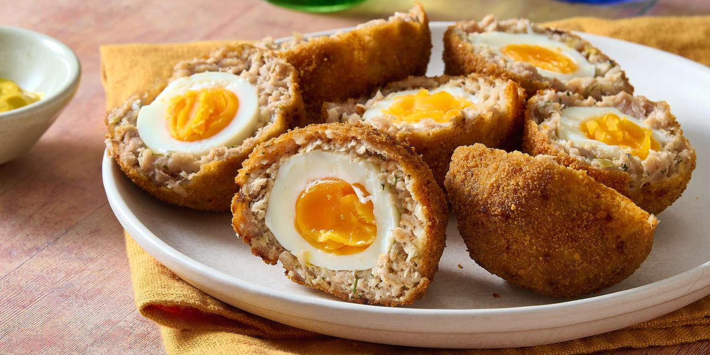

Home
Scotch Eggs

Description
A Scotch egg is a soft-boiled egg that has been wrapped in pork sausage, breaded,
and deep-fried or baked. Despite its name, this likely has English (not Scottish) origins.
Scotch eggs are commonly served cold at picnics in the U.K. and packaged Scotch eggs are
widely available in British supermarkets, corner shops, and gas stations.
Ingredients
- Eggs
- Sausage
- Flour
- Bread crumbs
- Frying oil
Steps
- Boil, cool, and peel the eggs.
- Flatten the sausage, make patties, and wrap the patties around each egg.
- Lightly flour the sausage layer, then coat with the beaten egg. Roll in bread crumbs.
- Deep fry the sausage-covered eggs until they’re golden brown.